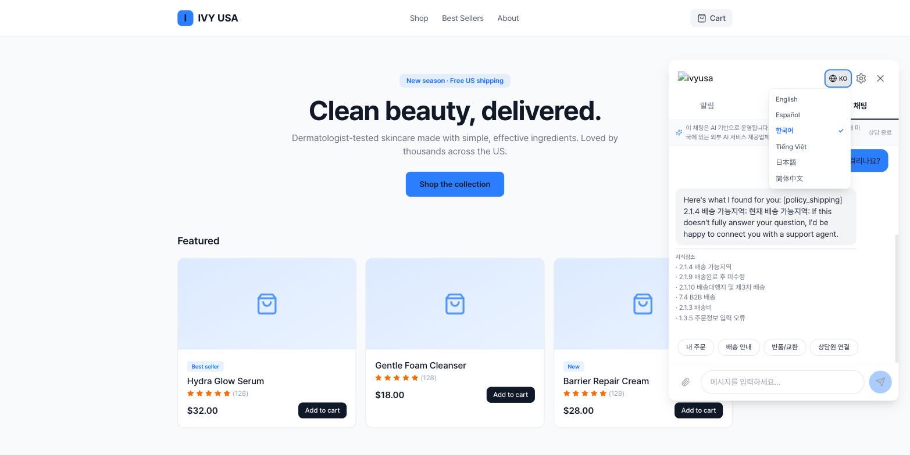
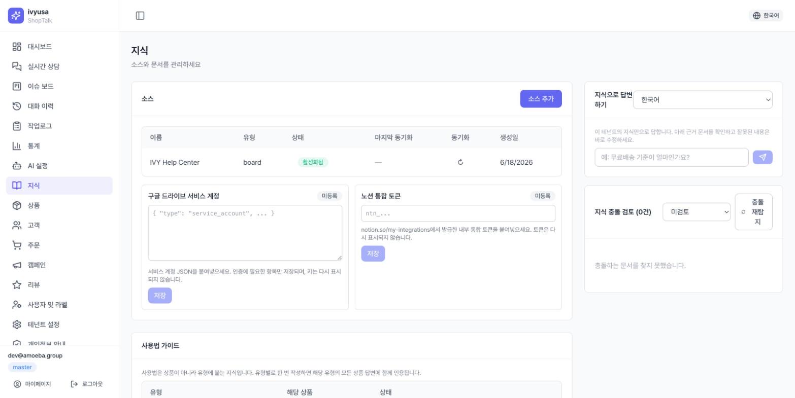
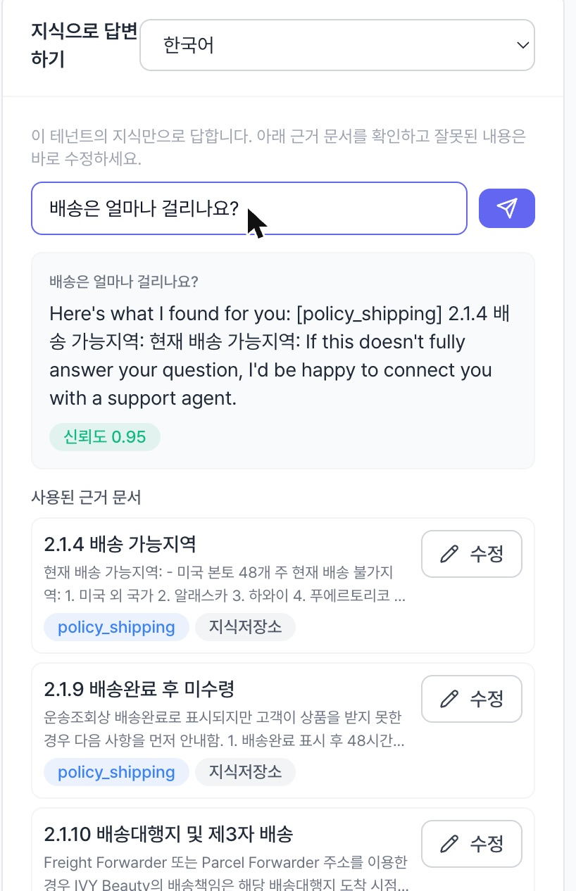
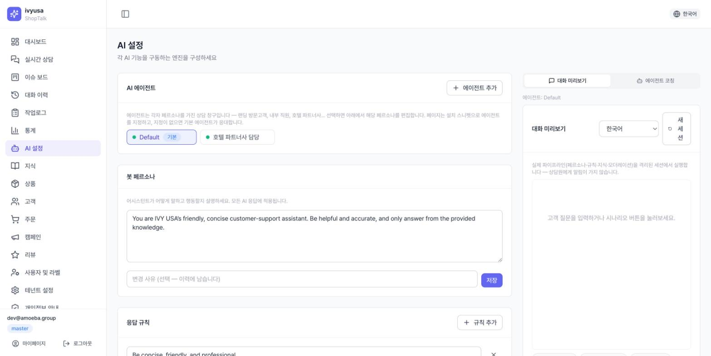
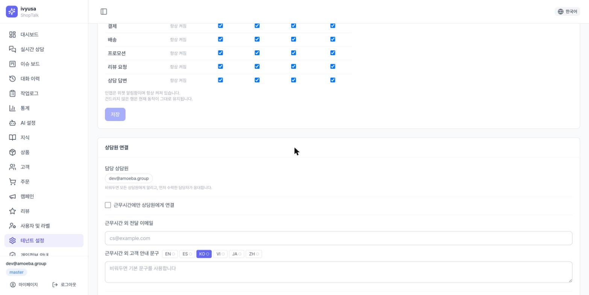

AI 응답 파이프라인 이해
고객 메시지 하나가 처리되는 전체 흐름입니다. 이 문서의 모든 설정은 이 흐름의 어딘가를 조정하는 일입니다.
고객 메시지
▼
① 의도 분류 ─── 주문·개인정보가 필요하면 → 본인확인(로그인) 안내
▼
② 지식 검색(RAG) ─ 등록된 지식 문서에서 관련 근거를 찾음
▼
③ 답변 생성 ─── 페르소나·응답 규칙 + 검색 근거로 작성, 신뢰도 산정
▼
④ 모더레이션 ── 금칙 규칙 검사 (통과 못 하면 고객에게 미노출)
▼
⑤ 분기: 신뢰도 충분 → 고객에게 답변(+출처)
신뢰도 낮음 / 차단 / 고객 요청 → 상담원 대기열(에스컬레이션)- 답변 언어는 고객 세션 언어를 따릅니다 (en/es/ko/vi/ja/zh).
- 상담원이 보내는 메시지도 ④ 모더레이션을 똑같이 통과합니다 (우회 불가).

지식 구조 이해
| 지식 문서 | AI가 답변 근거로 쓰는 글 1건. 제목·카테고리·본문으로 구성 |
| 임베딩 | 문서를 검색 가능한 벡터로 변환하는 색인 작업. 등록·수정 시 자동 수행 |
| RAG | 질문과 관련된 문서를 검색해 그 근거로만 답변을 생성하는 방식 |
| 소스 | 문서를 외부에서 자동으로 가져오는 연결 (게시판·Google Drive·Notion) |
| 그룹 | 문서 대분류: 상담(정책·FAQ) / 상품(카탈로그 유래) |
| 카테고리 | 그룹 아래 세부 분류 (faq, policy, product, warranty 등 자동완성 프리셋) |
| 활성/노출 | 검색 대상 포함 여부 — 비활성 문서는 답변 근거로 쓰이지 않음 |
| 신뢰도 | 답변이 근거에 얼마나 뒷받침되는지의 수치. 낮으면 상담원 인계 |
지식 화면(/knowledge)은 왼쪽에 소스·문서 관리, 오른쪽에 지식 QA 패널과
충돌 검토가 고정되어 있어 등록↔검증을 한 화면에서 오갈 수 있습니다.
지식 등록
2.1 수동 문서 등록·편집
문서 카드 → [문서 추가] → 제목 / 카테고리 / 내용 입력 → 저장. 제목을 클릭하면 상세 창이 열리고 [편집]에서 다음을 관리합니다.
| 필드 | 용도 |
|---|---|
| 원문 URL | 근거가 된 외부 문서 링크 (목록에서 바로 열기) |
| 적용 시작일 | 정책 발효일 |
| 검토 주기(일) | 지나면 목록에 stale(검토 필요) 배지 → 3.3절 |
| 내용 | 저장 시 자동 재임베딩 (검색 색인 갱신) |
- 문서 1건 = 주제 1개. "배송+환불+교환"을 한 문서에 몰기보다 나눠 등록해야 검색이 정확해집니다.
- 제목·본문에 고객의 실제 표현("배송 얼마나 걸려요")을 포함하세요 — 유사도 검색이라 고객 어휘와 가까울수록 적중합니다.
- 구버전 정책은 삭제 대신 노출 토글 OFF(비활성)로 제외하세요. 이력이 남고 되돌리기 쉽습니다.

2.2 상품 지식 — 카탈로그 동기화 · CSV · 사용 가이드
| 상품 캐시 | 플랫폼에서 동기화한 원본 상품 목록 (설정 화면의 상품 동기화 결과) |
| 카탈로그 동기화 | 상품 캐시 → 상품 지식 문서 변환. 미리보기 → 실행 2단계 |
| 변형 접기(병합) | "립스틱-레드/립스틱-핑크"처럼 대시로 구분된 변형을 대표 상품 1건으로 묶는 것 |
| 큐레이션 유지 | 운영자가 손으로 다듬은 상품 문서를 동기화가 덮어쓰지 않고 보존 |
| 사용 가이드 | 상품 유형별 공통 사용법 문서 — 상품 문서와 별도의 답변 근거 |
- [카탈로그 동기화] → 미리보기가 먼저 실행됨: 스캔 수와 예상 결과 (생성/수정/큐레이션 유지/병합 흡수/변경 없음/보류), 임베딩 배치 예상치, 병합 샘플 목록
- 병합 샘플에서 다른 상품이 하나로 묶이지 않았는지 확인 후 [실행]
- 진행률 2줄(작성/임베딩) 확인, 완료 후 결과 표의 임베딩 실패 건수 확인 (실패 건은 검색 불가 — 재실행 필요)
상품 CSV 가져오기: [상품 가져오기(CSV)] → 파일 선택 → 결과 통계(파싱/생성/수정/건너뜀/무효/임베딩됨)와 행별 오류(최대 20건)를 확인합니다. 같은 상품 재업로드는 덮어쓰기(업서트)됩니다.
사용 가이드: 카드에서 유형별 작성됨/미작성 배지 확인 → [작성] → 제목·본문(20자 이상) 저장.
- 반드시 미리보기부터 보세요. 잘못된 병합은 실행 전 미리보기에서만 잡을 수 있습니다.
- 플랫폼 상품이 바뀌면 [설정] 상품 동기화 → [지식] 카탈로그 동기화 2단계를 순서대로 실행해야 반영됩니다.
- 상품 설명이 빈약하면 태그가 지식의 재료가 됩니다 — 플랫폼 쪽 상품 태그를 정리해두면 답변 품질이 올라갑니다.
2.3 외부 소스 연동 (게시판 · Google Drive · Notion)
| 서비스계정 | Google Drive 연동용 로봇 계정 — 이 계정 이메일에 폴더를 공유해야 읽을 수 있음 |
| 통합(integration) | Notion에서 외부 도구 접근을 허용하는 단위 — 대상 페이지에 "연결" 필요 |
| 동기화 결과 카운트 | 생성·수정·건너뜀·숨김 건수. dropped/truncated는 일부를 못 가져왔다는 경고 |
- 자격증명 등록 — Google Drive: 서비스계정 키 JSON 붙여넣기 → 표시되는 서비스계정 이메일에
대상 폴더 공유 → [연결 테스트] / Notion: 토큰(
ntn_…) 등록 → 대상 페이지·DB에 통합 연결 → [연결 테스트] - [소스 추가] → 유형 선택(board/gdrive/notion) → gdrive는 폴더 ID, notion은 페이지·DB ID 또는 공유 URL
- 소스 행의 ↻(동기화) 실행 → 마지막 동기화 열에서 결과 카운트 확인
지원 유형: 게시판 ✅ · Google Drive ✅ · Notion ✅ · GitHub 리포지터리 소스는 지원하지 않습니다.
- 빨간 dropped/truncated 경고가 보이면 페이지가 너무 크거나 깊어 일부가 잘린 것 — 해당 문서 끝부분을 확인하고 원본을 나눠 재동기화하세요.
- 동기화가 갑자기 0건이면(폴더 공유 해제·통합 연결 해제 등) 기존 문서를 숨기지 않고 그대로 둡니다 — 연결부터 복구하세요.
- 소스 상태 셀 클릭 = 활성↔비활성 토글. 비활성은 동기화만 멈추고 가져온 문서는 남습니다.
지식 검증·품질 관리
| 지식 QA 패널 | 고객 입장에서 지식에 질문해보는 테스트 패널 (오른쪽 고정) |
| 출처(citation) | 답변의 근거가 된 문서 목록 — 유사도 수치와 함께 표시 |
| 충돌(conflict) | 두 문서가 서로 모순된 내용을 담고 있다고 탐지된 상태 |
| stale | 검토 주기가 지나 재확인이 필요한 문서 배지 |
| 지식 공백(gap) | 고객이 물었지만 지식에 답이 없던 주제 — 시스템이 문서 초안으로 제안 |
| 답변 제안 | 상담원의 실제 답변을 지식 문서로 승격하자는 제안 (사람 승인 필수) |
| 리비전 | 문서 변경 이력 스냅숏 — diff 보기·복원 지원 |
3.1 지식 QA 패널 — 등록 후 반드시 확인
질문 입력 → 답변 + 신뢰도 수치 + 출처 목록 확인 → 근거 문서가 틀렸으면 출처 옆 [수정](해당 문서가 바로 편집 모드로 열림) → 고친 뒤 [다시 질문]으로 재확인.

- 모더레이션 차단 배지가 뜨면 금칙 규칙(4.5절)에 걸린 것 — 실제 고객에게라면 노출되지 않았을 답변입니다.
- 출처에
conflicted/stale배지가 붙으면 그 문서부터 정리하세요. - 정책을 바꿀 때마다 "고객이 물을 법한 질문 3개"를 던져보는 습관이 가장 저렴한 회귀 테스트입니다 (자동화는 6.3절).
3.2 충돌 검토
충돌 검토 패널 → 상태 필터(대기/해결/무시/실패) → 항목별 유사도·탐지 시각·판정 근거 확인 → 액션 선택. [재스캔]으로 전체 재검사가 가능합니다.
| 액션 | 동작 |
|---|---|
| A 유지 / B 유지 | 선택한 쪽을 남기고 반대쪽을 비활성화 |
| 둘 다 유지 | 모순이 아니라고 판단 — 둘 다 활성 유지 |
| 무시 | 이 충돌 건을 닫음 |
| 재판정 | 문서를 고친 뒤 다시 판정 요청 |
충돌은 대개 정책 개정 시 구버전을 안 내려서 생깁니다. "A 유지"로 끝내지 말고 남긴 문서에 적용 시작일을 기록해 다음 개정 때 반복되지 않게 하세요.
3.3 검토 주기·stale / 변경 이력
문서 편집의 검토 주기(일) 경과 시 목록에 stale 배지가 붙습니다.
문서 상세의 검토 상태 박스에서 [검토 완료 표시]를 누르면 기한이 재계산됩니다.
변경이력 탭에서 리비전별 diff를 보고 [복원]할 수 있습니다.
배송비·프로모션처럼 자주 바뀌는 문서는 검토 주기를 30일 안팎으로 짧게, 법적 고지처럼 안정적인 문서는 길게 두면 stale 배지가 실질적인 할 일 목록이 됩니다.
3.4 지식 공백 제안함 · 답변 제안 승인 (폐루프)
- 지식 공백 제안함(상단, 건수 있을 때만): 지식이 비어 있던 주제가 문서 초안으로 쌓임 — [수락](제목·내용 편집 후 확정) / [무시]
- 답변 제안(대기 건 있을 때): 상담원의 실제 답변을 지식으로 올리자는 제안 — 질문·답변·출처 대화 링크 확인 후 [승인] / [거절](사유 필수)
주문번호·이름 등이 답변에 남아 있지 않은지 반드시 확인하세요 — 지식 문서는 모든 고객 답변의 근거로 재사용됩니다.
이 두 개가 지식이 스스로 자라는 통로입니다. 주 1회 비우는 루틴을 만들면 "AI가 자꾸 상담원에게 넘겨요"의 근본 원인이 줄어듭니다.
AI 설정
| AI 에이전트 | 페르소나·규칙 세트를 가진 상담봇 단위 — 여러 개를 만들어 채널·페이지별로 다른 봇 운영 |
| 기본 에이전트 | 별도 지정이 없는 위젯이 사용하는 에이전트 (항상 활성) |
| 진입점 스니펫 | 특정 에이전트로 위젯을 띄우는 설치 코드 조각 |
| 페르소나 / 응답 규칙 | 봇의 말투·원칙 서술 / 반드시 지킬 규칙 목록 (파이프라인 ③에 주입) |
| 시나리오 버튼 | 위젯 하단 빠른 메뉴 버튼 — 동작 7종 중 선택 |
| AI 기능 | AI가 쓰이는 자리 5곳 (chat/rag/summary/assist/moderation) — 자리마다 엔진 지정 |
| 모더레이션 규칙 | 발신 메시지를 검사하는 금칙 규칙 (파이프라인 ④) |
| 답변 재사용 | 승인된 과거 답변을 같은 질문에 LLM 호출 없이 재생 |
| 변경 메모 | 페르소나·규칙 저장 시 남기는 한 줄 기록 — 설정 변경 이력에서 조회 |

4.1 AI 에이전트 (멀티 페르소나)
AI 에이전트 카드에서 에이전트를 선택하면 아래 페르소나·응답 규칙 카드가 그 에이전트의 것으로 바뀝니다. [추가]로 이름·코드(소문자)를 정해 생성, [기본으로 지정]·활성 토글·[삭제] 관리, 진입점 스니펫 복사로 특정 페이지·채널에 설치합니다.
- 에이전트는 세션 시작 시 1회 배정 — 진행 중 세션의 봇은 스니펫을 바꿔도 안 바뀝니다.
- 존재하지 않는 코드로 진입하면 기본 에이전트로 폴백합니다 (위젯이 죽지 않음).
- 여기의 "AI 에이전트"는 상담원(사람) 계정과 무관합니다 — 사람 계정은 [사용자] 메뉴입니다.
4.2 페르소나·응답 규칙
페르소나 텍스트 작성 → 변경 메모 입력 → 저장. 응답 규칙은 [규칙 추가]로 한 줄씩(빈 줄은 저장 시 제거).
- 페르소나엔 정체성·톤, 규칙엔 행동 제약을 나눠 담으세요. 사실 정보(배송비 등)는 지식 문서에 — 페르소나는 검색되지 않습니다.
- 저장 후 반영은 캐시 때문에 최대 60초 걸릴 수 있습니다.
- 설정 변경 이력의 [에디터로 불러오기]는 불러오기만으로는 적용되지 않습니다 — 저장까지 해야 반영됩니다.
4.3 시나리오 버튼
행마다 라벨(최대 60자) / 동작 / 사용 체크 / 순서(↑↓)를 편집합니다. [답변 편집]에서 액션별 응답 문구를 6개 언어 탭으로 편집하고 후속 버튼(라벨·동작·URL)을 구성합니다.
| 동작 | 위젯에서의 실제 동작 |
|---|---|
| 배송 조회 | 배송 정책 고정 답변 + 후속 버튼 |
| 취소 / 환불 | 취소·환불·반품 고정 답변 + 후속 버튼 |
| 상품 도움말 | 서브메뉴(사용법·성분·교환/반품·재입고) |
| 고객 지원 문의 | 연락처 남기기 폼 — 상담원 연결 경로 |
| 내 주문 | 본인확인 후 주문 탭으로 이동 |
| 제휴 | 제휴 안내 카드 |
| 메시지 보내기 | 라벨 문구를 그대로 질문으로 전송 → AI가 지식 기반 답변 |
- 자주 묻는 질문을 버튼으로 만들려면 메시지 보내기 액션에 라벨을 질문 문장으로 쓰세요 (예: "무료배송 기준이 뭐예요?").
- 버튼은 삭제보다 사용 해제로 숨기세요. 고객 지원 문의는 항상 켜두는 것을 권장합니다.
- 고정 답변 문구와 지식 문서의 정책 내용이 어긋나지 않게 정책 개정 시 함께 갱신하세요.
4.4 AI 기능 (엔진·파라미터)
기능별 행에서 적용 엔진 선택, temperature(0~1)·max_tokens 입력 후 개별 저장. 미지정 기능에는 상속/기본/stub 배지와 실제 적용 엔진명이 표시됩니다.
| 기능 | 실제 용도 |
|---|---|
| chat | 고객 메시지의 의도 분류 등 대화 제어 |
| rag | 지식 기반 답변 생성 — 고객이 보는 답변의 본체 |
| summary | 대화 요약 (이력·인계 브리핑) |
| assist | 상담원 콘솔의 AI 보조 |
| moderation | 문맥(context) 금칙 규칙의 LLM 판정 |
폴백 사슬: 선택 엔진 사용 불가 → 테넌트 기본 → 플랫폼 기본 → stub(데모 응답) 순 자동 강등 — 대화가 끊기지는 않습니다.
현행 Claude 모델이 샘플링 파라미터를 거부하므로 시스템이 의도적으로 전송하지 않습니다. 입력해도 무시되며 OpenAI 계열 엔진에만 적용됩니다. max_tokens는 정상 적용됩니다(챗 답변은 512~1024 권장).
stub 배지가 남아 있으면 실서비스 품질이 아닙니다 — 엔진 등록은 플랫폼 관리자 권한입니다.
지식 검색용 임베딩 모델은 이 화면에 없습니다(전 테넌트 공용, 서버 관리).
4.5 모더레이션(금칙) 규칙
| 항목 | 선택지 | 의미 |
|---|---|---|
| 유형 | 단어 / 문구 | 포함 매칭 (대소문자 무시) |
| 정규식 | 패턴 매칭 | |
| 문맥(LLM) | "무엇을 차단할지"를 문장으로 쓰면 AI가 메시지마다 판정 | |
| 범위 | AI만 / 상담원만 / 둘 다 | 어느 발신자의 메시지를 검사할지 |
| 조치 | 차단 | 메시지를 내보내지 않음 (AI 답변이면 상담원 인계로 전환) |
| 마스킹 | 걸린 부분만 ▇▇▇ 처리 후 전달 | |
| 재작성 | AI가 안전한 문장으로 고쳐서 전달 |
- 이 게이트는 끌 수 없으며, 검사 실패 시 안전을 위해 차단 처리됩니다. 상담원 메시지가 거부되면 표현을 바꿔 다시 보내세요.
- 문맥(LLM) 유형은 moderation 기능 엔진을 씁니다 — stub 상태면 판정 품질이 없습니다.
- 과도한 단어 규칙은 정상 답변까지 막습니다. 마스킹/재작성으로 시작해 로그를 보고 차단으로 올리세요. 반영은 최대 60초.
4.6 답변 재사용
답변 재사용 카드에서 저장된 질답을 검색(활성만 필터), 항목별 편집/삭제, [전체 비활성화]로 일괄 중지.
재사용 답변은 LLM 호출 없이 즉시 나가 빠르고 저렴하지만, 정책이 바뀌면 낡은 답변이 그대로 나갈 수 있습니다. 정책 개정 시 관련 항목 수정/비활성화를 체크리스트에 포함하세요. 재사용 답변도 모더레이션은 통과합니다.
라이브챗 고객 대응 설정
| 에스컬레이션(인계) | AI가 대화를 상담원 대기열로 넘기는 것 |
| 핸드오프(상담 전환) | 인계 이후의 배정·시간·안내를 정하는 설정 묶음 |
| 영업시간 | 상담원이 응대하는 시간대 — 밖이면 영업외 안내·이메일 접수로 전환 |
| SLA | 응답 목표 시간 — 이슈 보드의 지연 배지(⚠️/🔥) 기준 |
| 대기열(waiting) | 인계된 대화가 상담원 인수를 기다리는 상태 |
5.1 담당자·영업시간·영업외 안내
- 담당자 지정 — 인계를 받을 상담원 체크
- 영업시간 사용 토글 → 타임존·시작/종료·요일, 필요 시 휴게시간 토글
- 영업외 접수 이메일 — 영업시간 밖 문의를 받을 주소 (SMTP 미설정 시 경고 표시)
- 영업외 안내 문구 — 언어 탭별 작성
- SLA — 일반/긴급 응답 목표 (시간, 1~168h)
- 정책 강제 핸드오프(deny-list) — 키워드(쉼표 구분) + 문의 유형 + 담당 라벨 규칙 등록. 매칭된 메시지는 AI를 거치지 않고 바로 상담원에게 전달되며, 생성되는 이슈에 유형·라벨이 자동 지정됩니다.

- 영업시간의 타임존을 상점 기준으로 정확히 — 미국 상점을 한국 시간으로 두면 안내가 반대로 나갑니다.
- 영업외 이메일 접수는 서버 SMTP 설정이 선행돼야 합니다 — 경고가 보이면 플랫폼 관리자에게 요청.
- 담당자를 아무도 지정하지 않으면 인계 대화가 공용 대기열에만 쌓입니다 — 최소 1명은 지정하세요.
5.2 인계(에스컬레이션) 조건 이해
| 트리거 | 동작 |
|---|---|
| 신뢰도 낮음 | 답변에 "상담원 연결을 도와드릴까요?"를 덧붙이고 대기열로 |
| 모더레이션 차단 | AI 답변 미노출, 상담원 연결 안내 후 대기열로 |
| 고객 요청 | 시나리오의 고객 지원 문의 또는 명시적 요청 → 즉시 대기열로 |
| 정책 강제 핸드오프 | 등록 키워드 매칭 시 AI 응답 없이 즉시 대기열로 — 메시지는 정상 저장·표시되며 이슈에 유형·라벨 스탬프 (메시지를 막는 기능이 아님) |
신뢰도 임계값은 화면에서 조정할 수 없습니다(코드 정책). 인계가 잦다면 임계값이 아니라 지식을 보강하는 것이
올바른 대응입니다(3.1절 QA 패널로 원인 확인). 인계된 대화의 처리(인수·AI 브리핑·종료·재배정)는
라이브챗 콘솔(/live-chat)에서 합니다.
검증·개선 루프
| 미리보기 | 실제 고객 세션을 만들지 않고 봇과 대화해보는 테스트 패널 |
| AI 코칭 | 자연어로 피드백하면 설정 변경안을 제안받고, 승인 시에만 적용되는 기능 |
| 제안(proposal) | 코칭이 만든 설정 변경안 카드 — 적용/거절/되돌리기 가능 |
| 골든 질문 | 답변 품질을 계속 확인하고 싶은 대표 질문 목록 (회귀 테스트 입력) |
| 회귀 테스트 | 설정·지식 변경 후 골든 질문 전체를 다시 돌려 답변이 나빠지지 않았는지 확인 |
| 변동성 측정 | 같은 질문을 반복 실행해 답변이 얼마나 흔들리는지 보는 기능 |
6.1 미리보기
미리보기 탭 → 언어 선택 → [새 세션] → 모드(고객/상담원) 선택 후 메시지 입력. 응답에 담당 에이전트 배지와 에스컬레이션 여부가 표시됩니다. 각 응답의 [이 답변 코칭]으로 그 턴을 코칭에 첨부합니다.
설정을 바꿨으면 저장 후 [새 세션]으로 시작해야 새 설정이 적용된 대화를 보게 됩니다. 답변 언어는 세션 언어를 따르니 언어를 바꿔가며 주요 질문을 확인하세요.
6.2 AI 코칭
AI 코칭 탭 → 스레드 선택 또는 [새 스레드] → 참조 턴 확인 후 자연어 지시 (예: "환불 안내가 너무 길어. 3문장 이내로") → 제안 카드의 변경 내용 검토 → [적용] / [거절] / 적용 후 [되돌리기].
- 코칭은 승인 없이는 아무것도 바꾸지 않습니다. 제안 카드의 실제 변경 내용(페르소나·규칙 diff)을 읽고 적용하세요.
- "배송비는 5만원 이상 무료" 같은 사실 정보는 코칭이 아니라 지식 문서에 넣을 일입니다 — 코칭은 말투·행동 규칙을 다듬는 도구입니다.
- 문구가 조금 달라지는 것은 정상 변동입니다. 신뢰도 하락·에스컬레이션 증가가 진짜 이상 신호입니다.
6.3 회귀 테스트 (골든 질문)
회귀 테스트 카드 → 골든 질문 등록(대표 질문 10~20개) → [지금 실행] → 최근 실행 목록의 [이전과 비교]로 답변 변화를 나란히 확인. [변동성 측정]으로 같은 질문의 답변 흔들림을 볼 수 있습니다.
- 골든 질문에는 ① 매출 직결 질문(배송·환불) ② 과거 오답이 났던 질문 ③ 정책 개정 대상 질문을 넣으세요.
- 대량 지식 변경·카탈로그 동기화·페르소나 개정 직후 한 번씩 돌리는 것을 루틴으로.
결과의
truncated배지는 질문 수가 실행 상한을 넘어 일부만 실행됐다는 뜻입니다.
운영 체크리스트
정책이 바뀌었을 때 (예: 배송비 개정)
- 관련 지식 문서 수정(재임베딩 자동) + 구버전 비활성
- 시나리오 고정 답변(배송 조회·취소/환불) 문구 확인
- 답변 재사용 항목 검색 → 낡은 답변 수정/비활성
- QA 패널로 대표 질문 3개 확인 → 골든 질문 회귀 실행
- 문서의 적용 시작일·검토 주기 갱신
주간 루틴
- 지식 공백 제안함·답변 제안 비우기 (3.4절)
- 충돌 검토 대기 건 처리 (3.2절)
stale배지 문서 검토 (3.3절)- 라이브챗에서 인계가 잦았던 주제 → 지식 보강
FAQ / 문제 해결
- Q. 문서를 등록했는데 AI가 그 내용을 모릅니다.
- ① 문서가 활성(노출 ON)인지 ② QA 패널의 출처 목록에 그 문서가 뜨는지 확인하세요. 안 뜨면 제목·본문을 고객 어휘로 보강하세요. 카탈로그 동기화의 임베딩 실패 여부도 확인.
- Q. AI가 자꾸 상담원으로 넘깁니다.
- QA 패널에서 해당 질문의 신뢰도·출처를 확인하세요. 근거 문서가 없으면 등록이 답이고, 있는데 신뢰도가 낮으면 문서를 쪼개고 어휘를 보강하세요.
- Q. 상담원 메시지 전송이 거부됩니다.
- 모더레이션 차단입니다. 금칙 규칙(4.5절)에 걸린 표현을 바꿔 다시 보내세요. 규칙이 과하면 master에게 조치 완화(차단→마스킹)를 요청하세요.
- Q. 답변이 영어로만 나옵니다.
- 답변 언어는 고객 세션 언어를 따릅니다. 미리보기에서 언어를 지정해 확인하세요. 페르소나를 한국어로 쓰는 것과 답변 언어는 무관합니다.
- Q. Google Drive/Notion 동기화가 0건입니다.
- 폴더 공유(서비스계정 이메일) 또는 노션 통합 연결이 끊긴 경우가 대부분입니다. 자격증명 카드의 [연결 테스트]부터 다시 하세요.
- Q. 코칭 제안을 적용했더니 답변이 이상해졌습니다.
- 해당 제안 카드의 [되돌리기]로 복구하세요. 설정 변경 이력에서 이전 리비전을 에디터로 불러와 저장하는 방법도 있습니다.
- Q. 같은 질문인데 답변이 매번 조금씩 다릅니다.
- LLM의 정상 변동입니다(폭은 6.3절 변동성 측정으로 확인). 문구가 아니라 내용이 달라지면 지식 충돌(3.2절)을 의심하세요. temperature 조정은 Anthropic 엔진에는 적용되지 않습니다(4.4절).